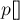
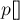

MAXimal
добавлено: 10 Jun 2008 19:17
редактировано: 25 May 2012 14:18
Содержание [скрыть]
Поиск в ширину
Поиск в ширину (обход в ширину, breadth-first search) — это один из основных алгоритмов на графах.
В результате поиска в ширину находится путь кратчайшей длины в невзвешенном графе, т.е. путь, содержащий наименьшее число рёбер.
Алгоритм работает за  , где
, где  — число вершин,
— число вершин,  — число рёбер.
— число рёбер.
Описание алгоритма
На вход алгоритма подаётся заданный граф (невзвешенный), и номер стартовой вершины  . Граф может быть как ориентированным, так и неориентированным, для алгоритма это не важно.
. Граф может быть как ориентированным, так и неориентированным, для алгоритма это не важно.
Сам алгоритм можно понимать как процесс "поджигания" графа: на нулевом шаге поджигаем только вершину . На каждом следующем шаге огонь с каждой уже горящей вершины перекидывается на всех её соседей; т.е. за одну итерацию алгоритма происходит расширение "кольца огня" в ширину на единицу (отсюда и название алгоритма).
Более строго это можно представить следующим образом. Создадим очередь  , в которую будут помещаться горящие вершины, а также заведём булевский массив , в котором для каждой вершины будем отмечать, горит она уже или нет (или иными словами, была ли она посещена).
, в которую будут помещаться горящие вершины, а также заведём булевский массив , в котором для каждой вершины будем отмечать, горит она уже или нет (или иными словами, была ли она посещена).
Изначально в очередь помещается только вершина , и , а для всех остальных вершин . Затем алгоритм представляет собой цикл: пока очередь не пуста, достать из её головы одну вершину, просмотреть все рёбра, исходящие из этой вершины, и если какие-то из просмотренных вершин ещё не горят, то поджечь их и поместить в конец очереди.
В итоге, когда очередь опустеет, обход в ширину обойдёт все достижимые из вершины, причём до каждой дойдёт кратчайшим путём. Также можно посчитать длины кратчайших путей (для чего просто надо завести массив длин путей ![d[]](../tex2png/cache/192f42354669dea1048458208212e4d4.png) ), и компактно сохранить информацию, достаточную для восстановления всех этих кратчайших путей (для этого надо завести массив "предков" , в котором для каждой вершины хранить номер вершины, по которой мы попали в эту вершину).
), и компактно сохранить информацию, достаточную для восстановления всех этих кратчайших путей (для этого надо завести массив "предков" , в котором для каждой вершины хранить номер вершины, по которой мы попали в эту вершину).
Реализация
Реализуем вышеописанный алгоритм на языке C++.
Входные данные:
vector < vector<int> > g; // граф int n; // число вершин int s; // стартовая вершина (вершины везде нумеруются с нуля) // чтение графа ...
Сам обход:
queue<int> q; q.push (s); vector<bool> used (n); vector<int> d (n), p (n); used[s] = true; p[s] = -1; while (!q.empty()) { int v = q.front(); q.pop(); for (size_t i=0; i<g[v].size(); ++i) { int to = g[v][i]; if (!used[to]) { used[to] = true; q.push (to); d[to] = d[v] + 1; p[to] = v; } } }
Если теперь надо восстановить и вывести кратчайший путь до какой-то вершины  , это можно сделать следующим образом:
, это можно сделать следующим образом:
if (!used[to]) cout << "No path!"; else { vector<int> path; for (int v=to; v!=-1; v=p[v]) path.push_back (v); reverse (path.begin(), path.end()); cout << "Path: "; for (size_t i=0; i<path.size(); ++i) cout << path[i] + 1 << " "; }
Приложения алгоритма
- Поиск кратчайшего пути в невзвешенном графе.
- Поиск компонент связности в графе за
 .
.Для этого мы просто запускаем обход в ширину от каждой вершины, за исключением вершин, оставшихся посещёнными () после предыдущих запусков. Таким образом, мы выполняем обычный запуск в ширину от каждой вершины, но не обнуляем каждый раз массив , за счёт чего мы каждый раз будем обходить новую компоненту связности, а суммарное время работы алгоритма составит по-прежнему
(такие несколько запусков обхода на графе без обнуления массива  называются серией обходов в ширину).
называются серией обходов в ширину). - Нахождения решения какой-либо задачи (игры) с наименьшим числом ходов, если каждое состояние системы можно представить вершиной графа, а переходы из одного состояния в другое — рёбрами графа.
Классический пример — игра, где робот двигается по полю, при этом он может передвигать ящики, находящиеся на этом же поле, и требуется за наименьшее число ходов передвинуть ящики в требуемые позиции. Решается это обходом в ширину по графу, где состоянием (вершиной) является набор координат: координаты робота, и координаты всех коробок.
- Нахождение кратчайшего пути в 0-1-графе (т.е. графе взвешенном, но с весами равными только 0 либо 1): достаточно немного модифицировать поиск в ширину: если текущее ребро нулевого веса, и происходит улучшение расстояния до какой-то вершины, то эту вершину добавляем не в конец, а в начало очереди.
- Нахождение кратчайшего цикла в ориентированном невзвешенном графе: производим поиск в ширину из каждой вершины; как только в процессе обхода мы пытаемся пойти из текущей вершины по какому-то ребру в уже посещённую вершину, то это означает, что мы нашли кратчайший цикл, и останавливаем обход в ширину; среди всех таких найденных циклов (по одному от каждого запуска обхода) выбираем кратчайший.
- Найти все рёбра, лежащие на каком-либо кратчайшем пути между заданной парой вершин
 . Для этого надо запустить 2 поиска в ширину: из
. Для этого надо запустить 2 поиска в ширину: из  , и из
, и из  . Обозначим через массив кратчайших расстояний, полученный в результате первого обхода, а через — в результате второго обхода. Теперь для любого ребра
. Обозначим через массив кратчайших расстояний, полученный в результате первого обхода, а через — в результате второго обхода. Теперь для любого ребра  легко проверить, лежит ли он на каком-либо кратчайшем пути: критерием будет условие .
легко проверить, лежит ли он на каком-либо кратчайшем пути: критерием будет условие . - Найти все вершины, лежащие на каком-либо кратчайшем пути между заданной парой вершин . Для этого надо запустить 2 поиска в ширину: из , и из . Обозначим через массив кратчайших расстояний, полученный в результате первого обхода, а через — в результате второго обхода. Теперь для любой вершины
 легко проверить, лежит ли он на каком-либо кратчайшем пути: критерием будет условие .
легко проверить, лежит ли он на каком-либо кратчайшем пути: критерием будет условие . - Найти кратчайший чётный путь в графе (т.е. путь чётной длины). Для этого надо построить вспомогательный граф, вершинами которого будут состояния
 , где — номер текущей вершины, — текущая чётность. Любое ребро исходного графа в этом новом графе превратится в два ребра и . После этого на этом графе надо обходом в ширину найти кратчайший путь из стартовой вершины в конечную, с чётностью, равной 0.
, где — номер текущей вершины, — текущая чётность. Любое ребро исходного графа в этом новом графе превратится в два ребра и . После этого на этом графе надо обходом в ширину найти кратчайший путь из стартовой вершины в конечную, с чётностью, равной 0.
Задачи в online judges
Список задач, которые можно сдать, используя обход в ширину: